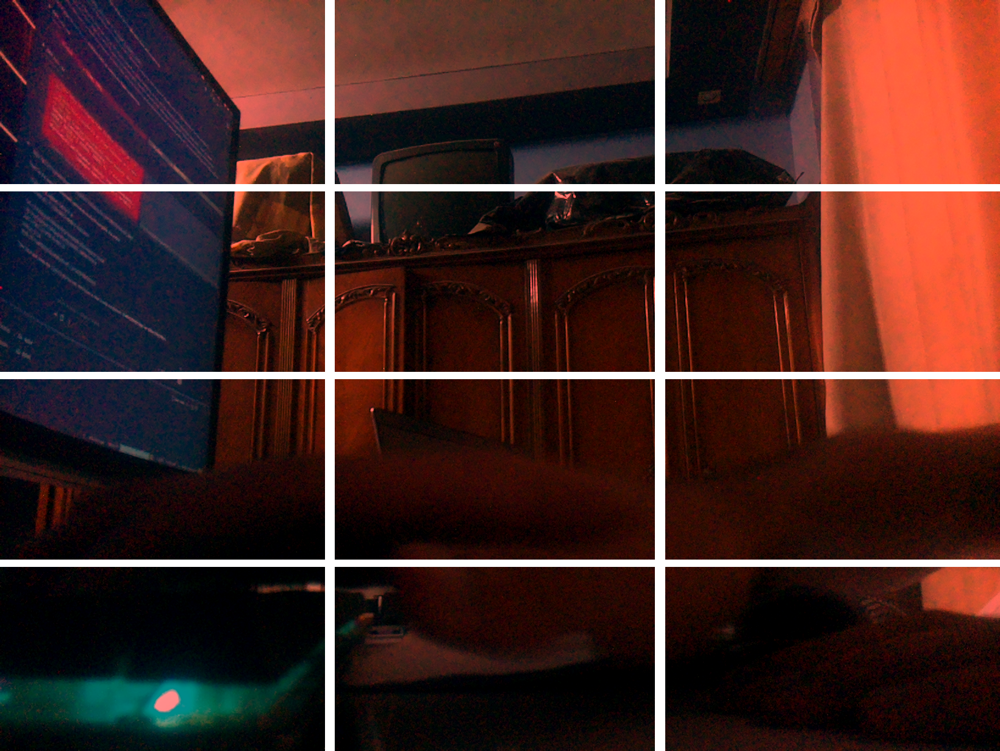
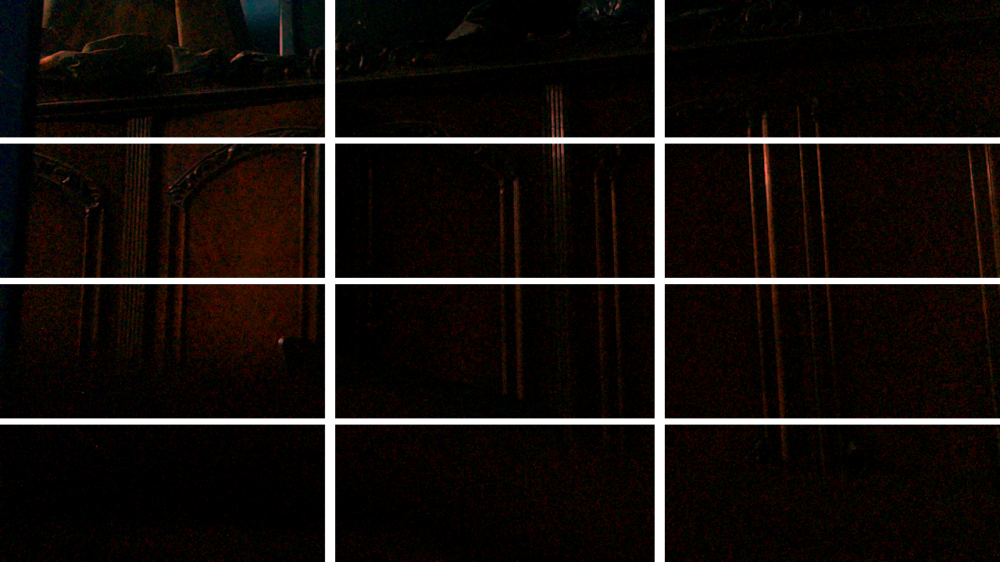

This week
GpuRenderer class and rewrote CaptureSession as a thread-safe producer/consumer queue with condition variables
eglCreateImageKHR is now called once per buffer at startup and stored in an unordered_map<fd, EGLImage>. Zero EGL calls per frame.
GL_EXT_disjoint_timer_query — reports true GPU execution time in nanoseconds without stalling the CPU, double-buffered to avoid blocking the render loop
FrameDurationLimits — discovered the bottleneck was libcamera's AE algorithm allowing 66ms exposures, not the sensor or GPU
perf stat, vmstat, V3D debugfs counters, and in-app timing — compared 1280×720@15fps, 1280×720@30fps, and 1640×1232@15fps
page-faults: 0 in perf stat across all configurations — no pixel data ever touches CPU RAM during steady-state rendering
s to save the current GPU frame as a PNG; the only time glReadPixels is called, on demand, without disturbing the render loop
agl-image-flutter-debug-raspberrypi4-64 — the debug image exposes Flutter tooling and better logging; all pipeline tests now run on this image instead of the production one
Key numbers
Live output — GPU snapshots

1640×1232 @ 15fps

1280×720 @ 30fps
Both frames captured live from the IMX219 camera via the keyboard snapshot trigger (press s). The GPU rendered each frame — red tint, Y-flip, grid overlay — directly from the DMA-BUF without any CPU copy. glReadPixels was called once, on demand, only when s was pressed.
Details
Last week's app captured one frame, rendered it, saved a PNG, and exited. That was
enough to prove the DMA-BUF → EGL → GPU chain works, but it measured nothing meaningful:
every run paid a ~460ms Mesa JIT shader compile cost, cold EGL import overhead,
and glReadPixels stall — none of which exist in a real pipeline.
The goal this week was to turn it into a proper continuous loop that runs indefinitely and can be measured while it's actually doing work. That required splitting the single-file program into real components with clear responsibilities.
The refactor introduced two main classes:
GpuRenderer — owns all GPU state for the process lifetime.
init() compiles the shader once, creates the FBO once, and pre-creates
one EGLImage + GL texture per buffer in the libcamera pool. render_frame()
does nothing except a map lookup, bind, draw, and flush — the fast path has zero
EGL calls and zero allocations. cleanup() destroys everything in the
correct order.
CaptureSession — wraps libcamera's callback-based API as a
producer/consumer queue. The libcamera thread pushes completed frames onto a
std::queue protected by a mutex. The main thread calls
nextFrame() which blocks on a condition variable until a frame is ready.
Warmup (30 frames for AE/AWB to settle) is handled silently before the queue is
ever exposed to the caller.
The main loop is then straightforward:
while (g_running) {
auto [buf, req] = session.nextFrame(); // blocks until camera delivers
renderer.render_frame(buf); // GPU: bind → draw → flush
req->reuse(ReuseBuffers);
camera->queueRequest(req); // camera buffer back in pool
}All 4 camera buffers are queued at startup so the ISP always has an empty buffer waiting while the GPU is rendering the previous frame. True pipeline parallelism.
The original code called eglCreateImageKHR() at the start of every
frame. This is unnecessary and expensive: the DMA-BUF fd→EGLImage binding is
stable for the entire lifetime of the libcamera buffer pool because libcamera
allocates buffers once and reuses them. The fd never changes.
The fix: at GpuRenderer::init(), loop over every buffer in the pool,
call eglCreateImageKHR() once, and store the result in:
std::unordered_map<int, FrameGLResources> fd_cache_;
// key: DMA-BUF fd value: {EGLImageKHR, GLuint texture}
render_frame() then does one O(1) map lookup. The per-frame EGL overhead
dropped to zero.
glFinish() blocks the CPU until the GPU has completed all submitted work.
In a real pipeline this is wasteful: the camera delivers a new frame every 33ms,
the GPU finishes rendering in ~6ms, so there are ~27ms where the CPU would be
sitting idle inside glFinish() doing nothing.
glFlush() submits the GPU command buffer and returns immediately.
The CPU can requeue the camera buffer and call nextFrame() right away.
When the next frame arrives (33ms later), the GPU has long finished (6ms).
The camera's natural pacing provides the synchronization — no explicit CPU stall needed.
glFinish() is still used in two places where it's correct: inside
save_snapshot() before glReadPixels(), and in benchmark mode.
CPU-side timing around glDrawArrays + glFinish() measures
wall-clock time that includes driver overhead and the explicit stall cost itself —
it perturbs the pipeline it's trying to measure.
GL_EXT_disjoint_timer_query measures GPU execution time as counted by
the GPU's own clock, in nanoseconds, without stalling the CPU. The implementation
is single-buffered: begin query → draw → end query → flush. At the start of the
next frame, read the result. At 30fps (33ms between frames) the GPU
finishes in ~6ms, so the result is always available — GL_QUERY_RESULT
returns instantly with no stall.
After changing resolution to 1280×720 the app was still running at 15fps. The IMX219 at 1280×720 is physically capable of 120fps. The GPU can handle 91fps at this resolution. The camera was delivering at 15fps because libcamera's Auto-Exposure algorithm allows frame durations up to 66ms (1/15s) indoors to maximize light collection.
The fix is FrameDurationLimits, passed to camera->start():
libcamera::ControlList controls;
int64_t fdl[2] = { 33333LL, 33333LL }; // µs → exactly 30fps
controls.set(libcamera::controls::FrameDurationLimits,
libcamera::Span<const int64_t, 2>(fdl));
camera->start(&controls);
This caps the maximum exposure time to 33ms so AE can still adapt to lighting
changes, but the frame rate is now locked at 30fps. Disabling AE entirely
(AeEnable = false) would also work but would give a fixed exposure
that can't adapt.
Before benchmarking it's important to know the hardware. The debugfs interface at
/sys/kernel/debug/dri/fec00000.v3d/ exposed the V3D identity:
Revision: 4.2.14.0
MMU: yes
TFU: yes ← Texture Formatting Unit (HW format conversion)
L3C: no (0kb) ← NO L3 texture cache
Core 0:
Slices: 2
TMUs: 2 ← one Texture Memory Unit per slice
QPUs: 8 ← 4 shader cores per slice
The most important line is L3C: no. The V3D 4.2 has no L3 texture cache.
Every texture sample that misses the small per-TMU cache goes directly to DRAM.
This makes DRAM bandwidth the primary performance constraint for the shader —
not ALU throughput. This is why the choice of samplerExternalOES
(one texture fetch, hardware NV12→RGB) over a manual two-plane approach
(two texture fetches + shader math) matters so much on this chip.
The GPU clock was measured via measure_clock:
# Idle (no app running)
cycles: 251069155 (251.0 MHz)
# Under load (app rendering at 30fps)
cycles: 515946781 (516.0 MHz)The V3D devfreq governor doubles the clock when the GPU is under sustained load. This is the expected behavior — the governor scales up from the idle 251MHz to the full 516MHz within a few frames of starting the render loop.
All three configurations were measured with the same tools: perf stat -p $PID sleep 10,
vmstat 1 10, V3D bo_stats, and the app's own in-process timing.
| Metric | 1280×720 @ 15fps | 1280×720 @ 30fps | 1640×1232 @ 15fps |
|---|---|---|---|
| CPU utilized | 0.074 cores | 0.126 cores | 0.074 cores |
| Context switches | ~2,200 / 10s | 3,838 / 10s | ~1,961 / 10s |
| Page faults | 0 | 0 | 0 |
| GPU clock | 516 MHz | 516 MHz | 502 MHz |
| GPU BOs | 25 / 14.8 MB | 25 / 14.8 MB | 25 / 31.1 MB |
| CPU idle | 97–99% | 96–97% | 97–99% |
| VmRSS | 28,100 kB | 28,632 kB | 28,100 kB |
| Theo. bandwidth | 72.6 MB/s | 145.2 MB/s | 159.0 MB/s |
The app's own output at 1280×720 @ 30fps:
[perf] 30.0 fps | render_cpu avg 0.493 ms | RSS 28632 kB | frames 4976
Zero-copy is confirmed. Page faults are zero across all three
configurations and all measurement runs. No pixel data crosses from GPU memory to
CPU RAM during the render loop. A pipeline with CPU copies would show thousands of
page faults per second from new mmap() regions.
CPU scales with frame rate, not resolution. Going from 15fps to 30fps at 1280×720 doubled the CPU usage (7.4% → 12.6%). Going from 1280×720 to 1640×1232 at the same 15fps left CPU usage identical. The CPU does no pixel work — its load comes from libcamera callbacks and mutex operations, which scale with frame count, not frame size.
GPU memory scales with resolution, not frame rate. The number of GPU buffer objects stayed at 25 across all configurations; only their size changed. 14.8 MB at 720p vs 31.1 MB at 1232p — a direct reflection of the larger NV12 camera buffers (4 × 2.89 MB instead of 4 × 1.32 MB) and the larger FBO (7.7 MB instead of 3.5 MB).
1640×1232 @ 15fps uses more DRAM bandwidth than 1280×720 @ 30fps. This is counterintuitive but the math is clear: a 1232p frame is 2.2× larger than a 720p frame, which more than offsets running at half the frame rate. For a backup camera, 1280×720 @ 30fps is the better operating point — lower bandwidth, smoother motion, smaller GPU memory footprint.
The GPU clock dropped slightly at 1640×1232 (502 vs 516 MHz). At 15fps the GPU renders in ~11ms then sits idle for ~55ms. The devfreq governor has time to ramp the clock back down during those idle windows. At 30fps the idle window is only ~22ms — the governor holds the clock at full speed.
render_frame() costs 0.493ms on the CPU. This is the cost of
the GL state machine calls (glBindTexture, glDrawArrays),
GPU timer query result retrieval, and glFlush(). At 33.3ms per frame
this is 1.48% of the frame budget. The remaining 98.5% the CPU is sleeping,
waiting on the camera.
Adding a way to save a PNG mid-stream without interrupting the render loop required
a bit of care. The solution: set the terminal to raw mode (tcsetattr
with ~(ICANON|ECHO)) and stdin to non-blocking (fcntl O_NONBLOCK).
After each render_frame(), a single read(STDIN_FILENO, &key, 1)
is attempted. When no key is pressed this fails immediately — the cost is one failed
syscall, microseconds. When s is pressed, glFinish() +
glReadPixels() + libpng encoding runs, then the loop resumes.
This is the only path where pixel data leaves the GPU. It is explicitly on-demand and does not affect the FPS measurement.
Challenges & learnings
Challenge
The app was stuck at 15fps even after switching to 1280×720 — a resolution where
the IMX219 can theoretically do 120fps. Suspected the GPU or driver at first.
The real cause was libcamera's AE algorithm silently allowing 66ms frame durations
indoors. Nothing in the logs said "running at 15fps by choice." The fix
(FrameDurationLimits) is a single control passed to
camera->start() — but finding it required reading the libcamera
controls documentation carefully.
Key learning
The V3D 4.2 has no L3 texture cache at all. This makes memory bandwidth the
dominant GPU performance constraint — not shader ALU throughput. Every design
decision that reduces texture fetches or memory copies (samplerExternalOES,
EGLImage pre-caching, glFlush instead of glFinish) directly addresses the real
bottleneck on this hardware. Also: page-faults: 0 in
perf stat is the single most convincing zero-copy proof — it rules
out any hidden mmap/memcpy in the hot path.